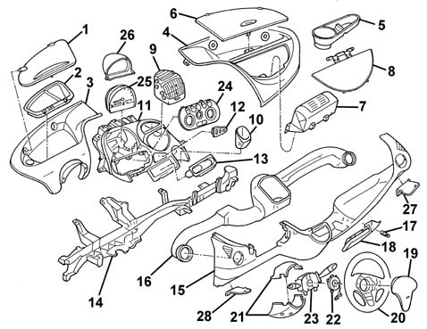

Introduction - BODYSHELL INTERIOR TRIMS AND FITTINGS
- Path
- Descriptions > 70 FITTINGS > 7040 BODYSHELL INTERIOR TRIMS AND FITTINGS > Introduction - BODYSHELL INTERIOR TRIMS AND FITTINGS
- Kind
- system description
- Applies to
- all engines; all production periods
- Interactive page
- https://sloeber94.github.io/elrnDB-fMltpl/en/#/2892461
Applies to: all engines; all production periods
Unlike on traditional vehicles, the dashboard on the Multipla is not in one piece, but is composed of three main sections anchored to a magnesium alloy supporting crossmember: this facilitates repair operations and means lower costs for the Customer.
The covers and the various components are therefore fixed to the three main elements and the structure underneath.
The layout of the various components is "spatial" in order to exploit the depth of the space available with all the controls in optimum positions and the functional elements not all along the same line, as is usually the case, but arranged according to new ergonomic and user friendly criteria.
The controls are also all grouped together in a "central island" thereby allowing the creation of numerous functional spaces and oddments pockets:
- there is a large, closed compartment for items in front of the driver;
- there is another closed compartment in front of the passenger (version with passenger Air Bag)
- there is an open compartment in front of the passenger (version without passenger Air Bag);
- there is also a bottle holder (version without passenger Air Bag only) and a glass holder;
- there is an area for holding coins in the centre (in addition to the usual radio console);
- there are two open compartments in the lower part of the dashboard.
Lastly, under the sun visors there are two small compartments.

1, Left compartment cover 2, Junction unit access cover 3, Left upper cover 4, Right upper cover 5, Bottle holder (version with passenger Air Bag) 6, Right compartment cover 7, Passenger Air Bag modules 8, Passenger Air Bag module covers 9, Centre air vent 10, Glass holder 11, Centre console 12, Rear electric windows switches 13, Radio console 14, Supporting crossmember 15, Lower cover 16, Air duct for side vents 17, Electric socket 18, Ashtray with cigar lighter 19, Driver's Air Bag module 20, Steering wheel 21, Steering column covers 22, Clock spring 23, Steering column switch unit 24, Switch unit and climate control controls 25, Instrument panel 26, Instrument panel cowling 27, Right trim 28, Left trim